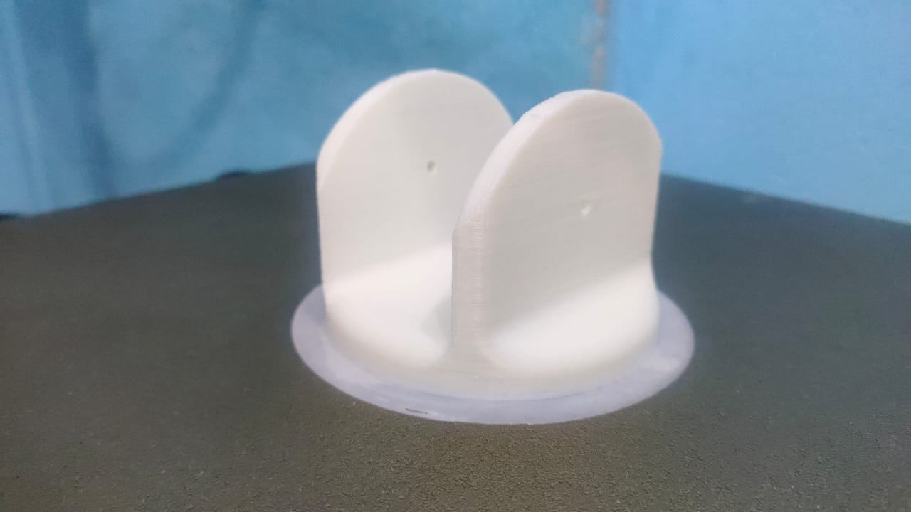
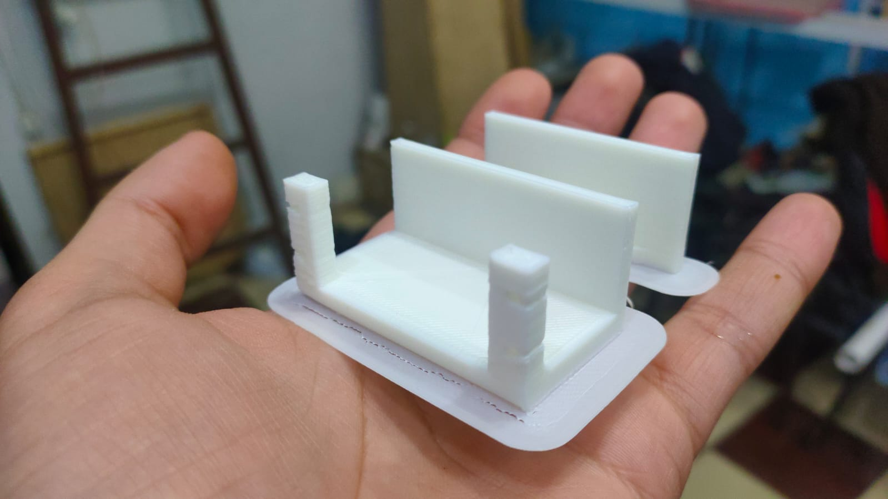
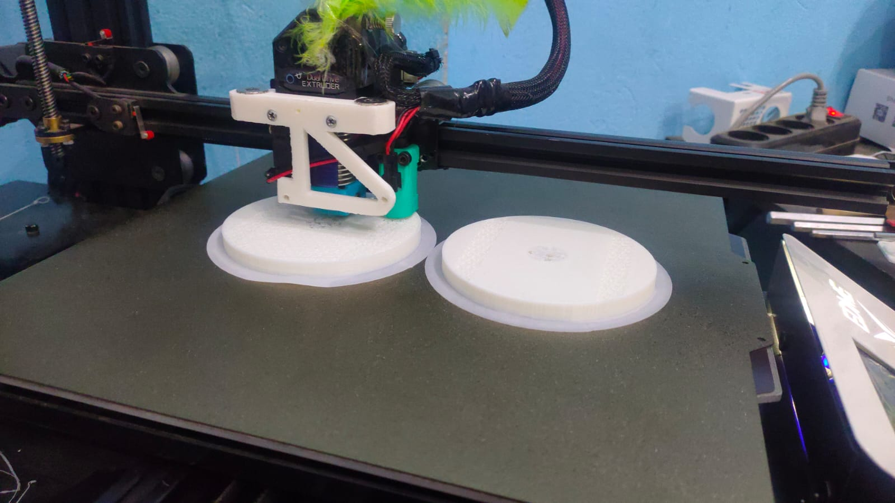
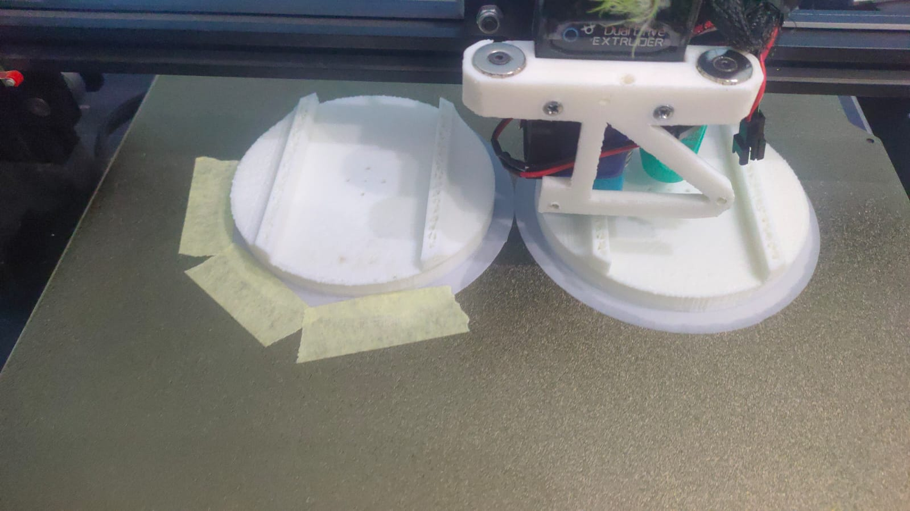
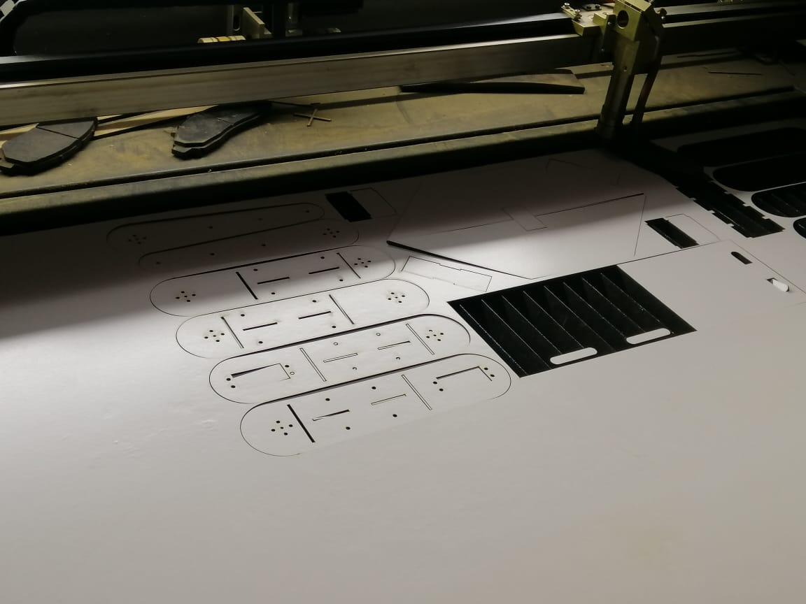

Assistant Robot for ADHD Symptoms
provides therapeutic support in the performance of school tasks by minors with ADHD. All the technology it presents have been made according to the knowledge acquired, and feedback provided by therapists, parents and children.

About Project
The robot is equipped with a range of sensors and motors, including ultrasonic sensors for detecting obstacles, DC motors for movement, and servo motors for controlling the robot's arms and other appendages. The robot is controlled by a Raspberry Pi 4 computer and uses a 7-inch touch screen display for user interaction.
One of the key features of the robot is its ability to help children with ADHD stay focused and engaged. For example, the robot can be programmed to perform a variety of tasks, such as reminding the child to stay on task or helping them with homework. The robot can also be used to monitor the child's behavior and provide feedback to parents and caregivers.
Overall, this project has the potential to make a real difference in the lives of children with ADHD and their families. By providing a fun and engaging tool for monitoring and managing ADHD symptoms, the robot could help these children lead happier and more productive lives.
Design
Robot Chassis and Inner Parts
The chassis of the robot serves as its skeleton, so it is essential to have a well-designed and well-assembled one. The success or failure of the robot can depend on the chassis that’s why we chose to work on a wheeled chassis type which will be more suitable in our project. It is designed to hold most of the electric components such as: microcontrollers, motors, wheels, etc. it is also designed to connect the external body covers to it so it can be installed and uninstalled, it is important to uninstall the parts in case any damaged happened inside the body either if it was a burnt component or a wiring problem. The chassis itself can be divided into two parts which are the upper and lower parts.


There are some aspects to consider. The structural metal components assemble much easier when 90 and 45 degrees connections are used. The chassis shape should allow space for the robot’s other components such as the control system, battery, motors, and wheels. A good design practice is to lay out the chassis with all of the other components before the assembly to assure the spacing will work.Aluminum square tube 25x25x1mm is use as the type of structural metal pieces that is used to assemble the chassis where its properties make it widely used for designs in robotic competitions as it will be further explained in the fabrication.
Stress Analysis and Factor of Safety (FOS)
Structural stress analysis is performed in order to ensure that a structure will fulfill its intended function in a given loads environment. It is important to anticipate all the possible failure modes and design against them. Stress is the measure of an external force acting over the cross-sectional area of an object. Stress has units of force per area: N/m2 (SI) or lb. /in2 (US). The SI units are commonly referred to as Pascals, abbreviated Pa. There are two types of stress that a structure can experience: 1. Normal Stress and 2. Shear Stress. When a force acts perpendicular (or "normal") to the surface of an object, it exerts a normal stress. When a force acts parallel to the surface of an object, it exerts a shear stress. In our project we subjected the chassis to a load that reaches to 196N (20Kg) in lower bars and 98N (10Kg) in upper bar then started to calculate the stress analysis

Each material has an ultimate stress a measure of how much stress the material can withstand before failing. To properly design a safe structure, we need to ensure that the applied stress from the external loading never exceeds the ultimate stress of the material. Part of the difficulty with this task is that we don't always know exactly what the external load is it may vary unpredictably, and the structure may have to withstand unexpectedly high loads. To account for this uncertainty, we incorporate a Factor of Safety into our design. The factor of safety is just a ratio of the failure load or stress to the allowable load or stress. The failure or ultimate value is a material property while the allowable value is determined by the external force and the geometry of the structure.only a linear displacement is happening to the chassis, so we are in the safe zone and to make sure of that we calculated the minimum factor of safety (FOS) = 1.5 so it means our structure can be safely manufactured to hold loads up to 392N (40Kg).
Robotic Arms Mechanism and Torque Calculations
In the real world, a servo motor’s axis is the blue nail. This is the robotic arm’s joint. The orange bar is the link of a robotic arm. The force F is the force acting on an object (that the robotic arm is trying to lift) due to gravity as shown

F = mass * g
Where m is the mass the servo motor has to lift, and g is the acceleration due to gravity (9.80665 m/s2). The torque for this setup above is: τ = m * g * r
To calculate the torque requirement, we start at the end of the robotic arm and then work our way to the base of the robot. We need to account for all the pieces of the robot that are impacted by gravity.

Torque
Let’s start with joint 3. Joint 3 has to be strong enough to lift the link number 3 (r3), the force of gravity acting on link 3 is equal to mass of link3 * gravity, therefore:
Torque3 = (r3 * m link3 * g)
Torque3 = (0.17 * 0.02617 * 9.81)
Torque3 = 0.043643709 N.m = 0.4450419766 Kg.cm
Let’s now do one more. We’ll do joint 2 Joint 2 has to be strong enough to lift link 3 and link 2, therefore:
Torque2 = ((r3 * m link3 * g) + (r2 * m link2 * g))
Torque2 = ((0.17 * 0.02617 * 9.81) + (0.17 * 0.01354 * 9.81))
Torque2 = 0.066224367 N.m = 0.6753006072 Kg.cm
Now do one more. We’ll do joint 1 Joint 1 has to be strong enough to lift link 3, link 2, and link 1 therefore:
Torque1 = ((r3 * m link3 * g) + (r2 * m link2 * g) + (r1 * m link1 * g))
Torque1 = ((0.17* 0.02617 * 9.81) + (0.17 * 0.01354 * 9.81) + (0.35 * 0.15 * 9.81))
Torque1 = 0.581249367 N.m = 5.9270940331 Kg.cm
From the previous calculations we can observe that the maximum torque that servo motors will reach is 5.9 kg.cm so it’s preferable to choose MG996R TowerPro servo motor which can hold up to 11 kg.cm giving a factory of safety that reaches to 1.8 for the other components attached to the arms.
Robotic Arms Assembly
Links of robotic arms won’t need to hold heavy objects so its preferable to make these links as light as possible but also with strength not to break and the best option in this case is using wooden plates to form links as wood is a bad conductor of electricity so if any electric leakage happened it won’t reach to the connected motors and damage them. The robotic arm has 3 DOF which is divided into 2 for the shoulder to allow it to move freely and 1 for the elbow


External Body Concept
Simply said, robotics is the combination of technology, science, art, and engineering that produces devices or robots that can behave like people. Many current human jobs will be replaced by machines or automation as technology advances. Our kids are more likely to benefit from early exposure to robotics concepts. This discipline helps kids develop a variety of soft skills, including critical thinking, problem solving, programming, creativity, communication, and others because of its interdisciplinary character

The concept of our robot design is to be very friendly, joyful, and curious robot. It has the ability to follow the child using its wheels and a touchscreen mounted in its chest to give the child activities with a camera on which is used for the vision and detection of facial expressions giving feedback to the parents.

Installation of Robotic Arms Covers
The chosen material for the body covers is Fiberglass which is a highly versatile lightweight material that is often used as a durable and cost-effective alternative to wood, and metal. The robotic arm covers are designed to be detachable and installable incase any damage happened to the servo motors so it can be easy to repair or exchange them. The arm covers are consisting of three main parts that will be discussed more as shown in the video.
Removal and installation Feature of The Robot
The upper body is designed so it can hold the touchscreen, ultrasonic sensor, and raspberry pi camera, and a rectangular cut is made at the top of the body to allow the servo to reach to the head and allow it to move, it’s also designed in a certain way so it can be attached to the lower body of the robot and a circular slot with 100mm diameter that allow both arms to be attached to the body
The lower body is designed to be attached with the upper part of the body as mentioned, it consists of two unmovable legs that has another female / male connection when the car placed beneath it, it is then connected to the upper body using the female / male connections and both are mounted to the chassis
The car is designed to allow the robot movement in all directions using four wheels with only two motorized rear wheels, the car body is designed to cover these components, the fours wheels are hidden inside the design and 4*2 circular slots are cut for the ultrasonic sensors in all direction allowing the car to avoid all obstacles

Fabrication
Chassis
Regarding chassis fabrication, we have chosen Aluminum to be the material of fabrication.

3D Printing Parts
We have chosen PLA to be the material of printing.
   CNC
We have chosen MDF woods to be the material of manufacturing
Fiber Glass
We have chosen Fiberglass Reinforced plastic (FRP) to be the material of manufacturing.

Final Result